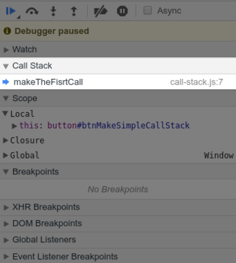
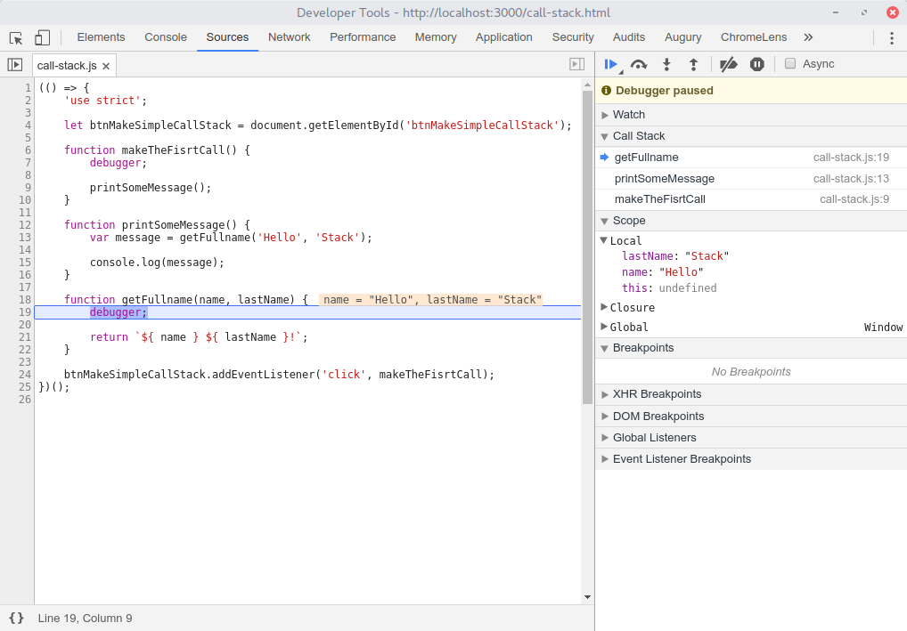
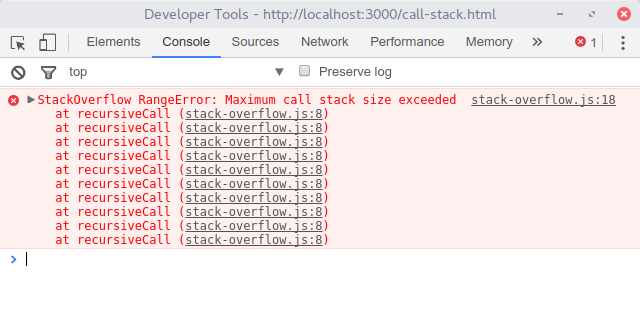

O call stack é a pilha de chamadas de execução do programa.
Conforme nossas funções são executadas, elas vão sendo empilhadas uma sobre a outra, e depois removidas dessa pilha em ordem regressiva.
Note que eu utilizei a palavra chave debugger, assim consigo inserir automaticamente
um breakpoint no meu código forçando a pausa de sua execução conforme imagem a seguir.
Perceba também que no painel Call Stack só tem a função makeTheFisrtCall, que no caso é a função que está sendo executada.
Aperte F8, e o depurador irá pular para a execução da função getFullname. Agora temos 3 funções na pilha de execução.
Agora conforme você vai pressionando F10, você acompanhará a pilha de execução sendo esvaziada conforme as funções terminam suas instruções.
Quantas funções cabem em uma pilha de chamadas? A resposta mais correta seria: o quanto de recurso a VM decidir usar. Pode ser um valor fixo ou de acordo com a memória disponível.
Ao atingir esse limite, ocorre um erro na execução do nosso programa. Clique no botão abaixo e depois verifique a excessão no console.
Você deverá visualizar um erro igual ao erro na imagem abaixo.
.Conseguimos causar esse erro fazendo uma chamada recursiva da função recursiveCall, sem informar um fim ao programa.
Existe uma proposta chamada Syntactic Tail Calls, que possibilitaria que a função recursiveCall fosse executada eternamente. Essa proposta traria melhorias no contexto de execução de funções no JavaScript.